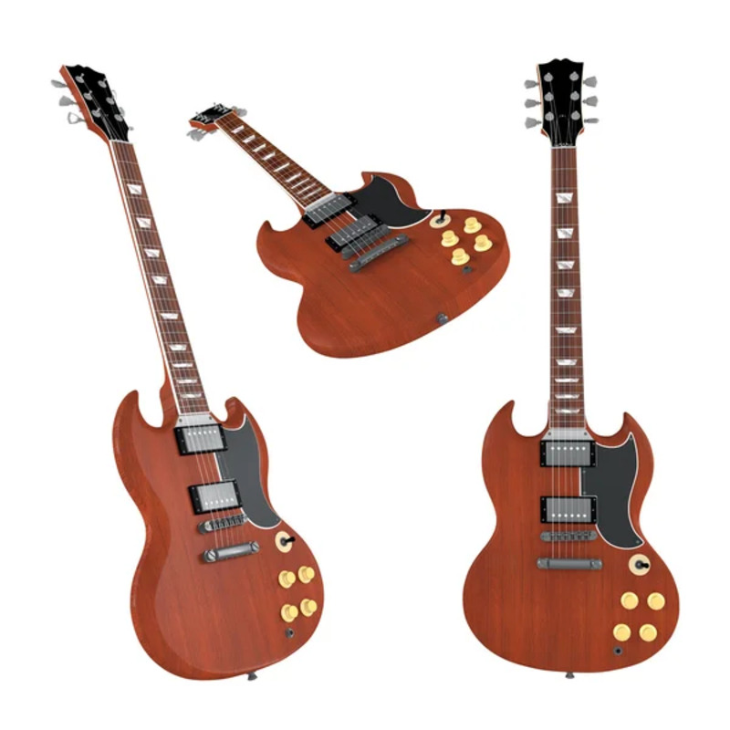
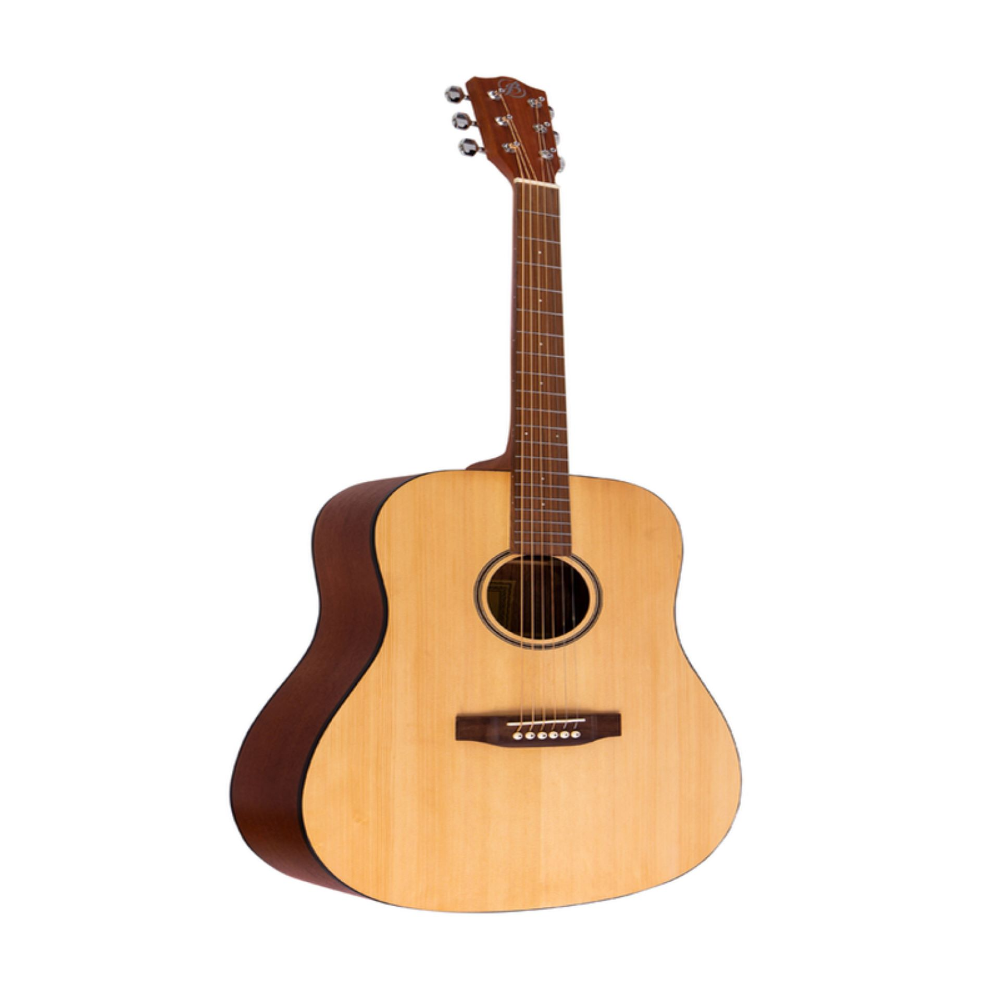
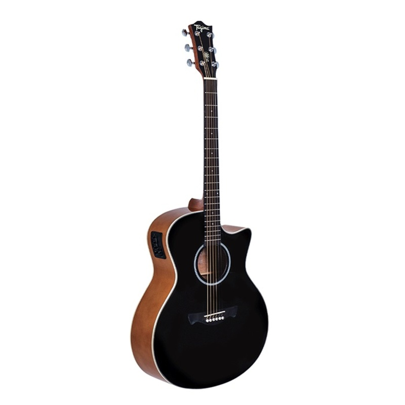

Guitarra electrica
La guitarra eléctrica es un tipo de guitarra en la que, a diferencia de la guitarra española y la guitarra sajona, su caja no hace resonancia, por lo que el sonido se produce indirectamente por inducción eléctrica y a través de un amplificador o también a través de un pedal de efectos.

Guitarra acustica
La guitarra acústica es un tipo de guitarra en la que el sonido se produce por la vibración de las cuerdas y se propaga a intensidades audibles a travers la risonancia de la caja armónica, sin necesidad de amplificación eléctrica

Guitarra electro acustica
Una guitarra electro-acústica es un instrumento musical armónico equipado con pastillas, un micrófono o transductores. En las guitarras electro-acústicas, los transductores y micrófonos se utilizan siempre porque las pastillas convencionales no son capaces de captar las vibraciones de los materiales no magnéticos